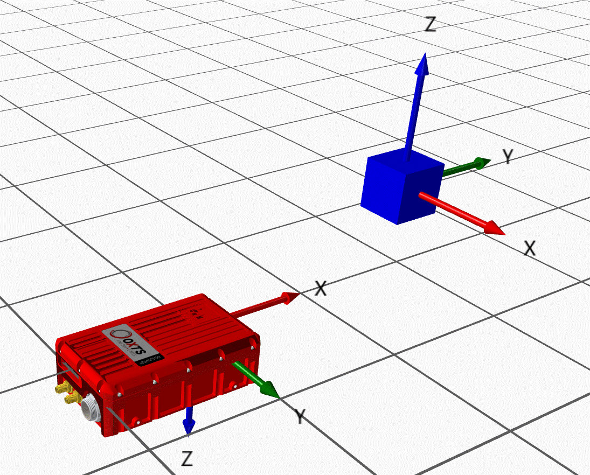
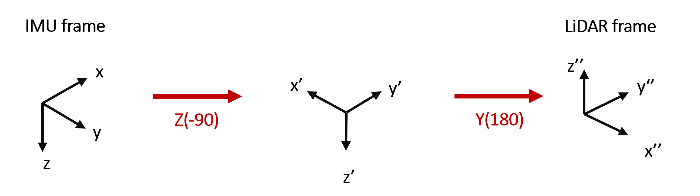

Velocity
The GA interface allows users to send a number of measurement updates to an OxTS INS from external devices/ sensors, including velocity estimates. Each of the fields for this data type can be set using functions from the GadVelocity class.
Aiding frames
Velocity aiding can be provided to the INS in more than one coordinate frame, based on the needs of the user.
North, East, Up frame
The NEU frame is the simplest way to provide velocity aiding to the INS, since it requires no other configuration. Note that this is a left-handed coordinate system.
Velocity measurements in this frame are expected in \(m/s\).
User-defined local frame
Velocity aiding supports a user-defined local frame. More information on how to define the frame itself can be found on the relevant page.
Velocity measurements in this frame are expected in \(m/s\) .
Odometry frame (beta)
For this aiding frame, data is expected in the frame of an odometry sensor fixed to the vehicle. In order to use this frame, the transformation between the sensor and the INS must be specified in the INS configuration. This can be done with advanced commands in NAVconfig or in the mobile.cfg file directly on the unit.
The odometry frame requires a rotational transformation as well as the standard lever arm, which is specified in much the same way in the following commands:
-attitude[att_id]_[heading]_[pitch]_[roll]_[var_hea]_[*var_pit]_[*var_roll]
-gad_on[stream_id]
-gad_att_id[stream_id]_[att_id]
See Advanced commands for more information.
The -attitude option sets the orientation of the sensor frame with respect to the IMU frame. The angles are defined intrinsically, following the \(Z_1 Y_2 X_3\) convention in degrees. The var_pit and var_roll inputs are optional, with the var_hea option being used for all three variances if the others are not specified. Note you must specify either one or three variances.
The -location option specifies the lever arm \((x,y,z)\). This defines the translation from the IMU to the aiding sensor, in the IMU frame. See the lever arm documentation for further information.
A stream Id is a unique identifier for each GAD input. One device can output any number of streams, these streams would each have different Ids. When sending your data to the INS you should ensure each data source has a unique Id.
Example
Defining the lever arm in the IMU frame is relatively intuitive, but finding the angles of rotation can be less so for those who have not done it before. Hence, we provide an example.
Say we are using a LiDAR as our odometry source, and we want to define the YPR angles.
We can do this by most intuitively by starting with the LiDAR frame and rotating it until it aligns with the IMU frame. This is shown in the diagram below:
Once we have these, the configuration option can be added:
-gad_on130
-attitude3_90.0_180.0_0.0_0.1
-gad_att_id130_3
Warning
This update frame requires that the lever arm is set to fixed in the packet, otherwise the data will not be used by the INS. The values are irrelevant: actual values are taken from the config options.
Covariance matrix
All aiding provided to the INS must come with a covariance matrix. This is necessary to give the Kalman Filter some indication of confidence in the data being provided, which it can then use to inform its decision to use / reject the data.
For velocity aiding, the values in covariance matrices are currently expected with units \((m/s)^2\). For example, a covariance matrix where motion in all axes is found to be (or assumed to be) independent might look like this:
This matrix shows that
Lever Arm
Velocity measurements must be provided with a lever arm \((x,y,z)\) which defines the translation from the IMU to the aiding sensor, in the IMU frame.